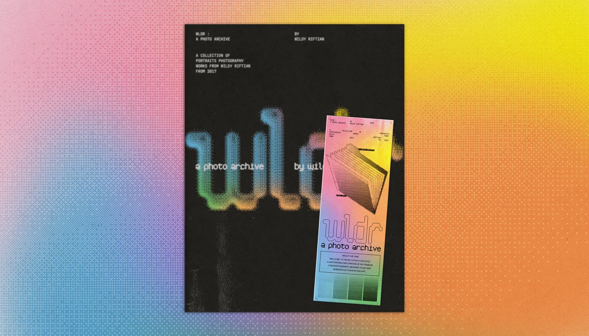
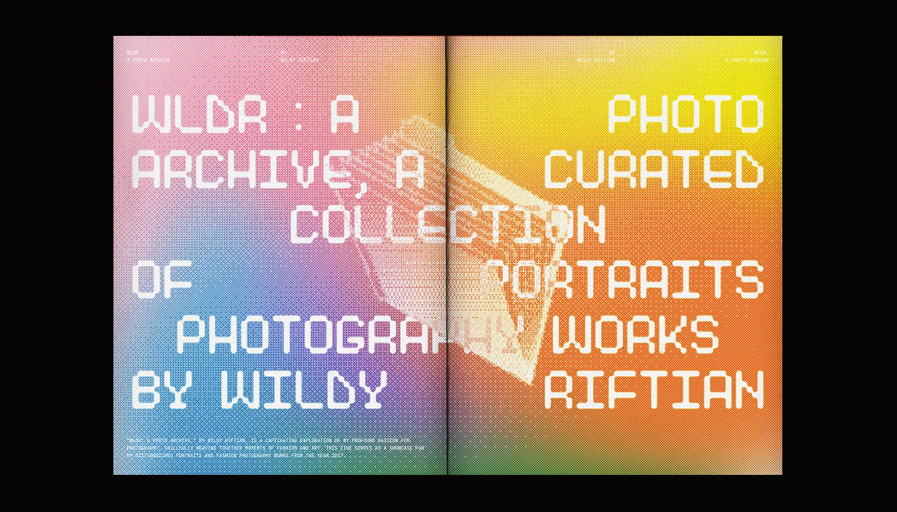
In the realm of visual arts, my photographic journey transitioned from a mere hobby to a professional pursuit. I crafted 'wldr: a photo archive,' a zine spotlighting my works, particularly in portraits and fashion photography—two genres that deeply captivate me. This publication acts as a curated exhibit, chronicling my photographic exploration over the years.
With 18 distinctive sections, the zine features editorial photoshoots from 2017 to my latest works, each embodying a unique thematic concept and aesthetic. Deliberately curated visual narratives within this zine reflect my artistic vision. As both creative director and photographer, I intertwine diverse skills, showcasing technical prowess and conceptual depth.
Through 'wldr: a photo archive,' my goal is to exhibit my varied skills as a photographer, acting as a testament to my dedication and illustrating the evolution of my craft and artistic expression in visual storytelling.
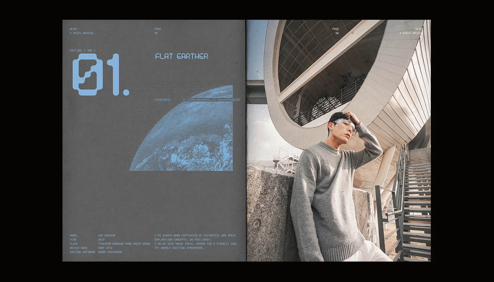
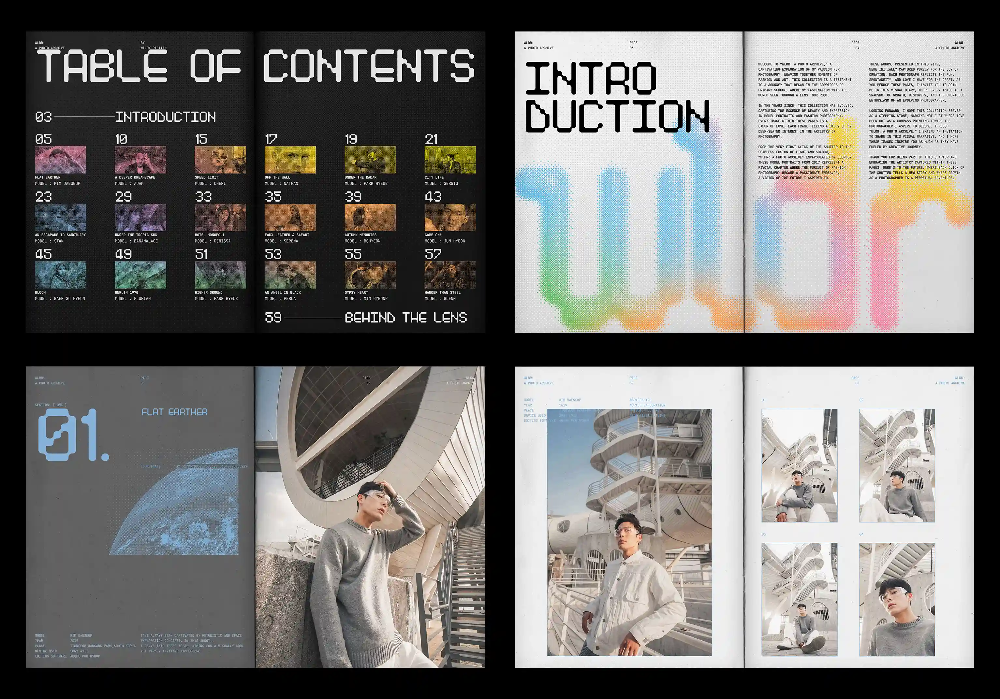
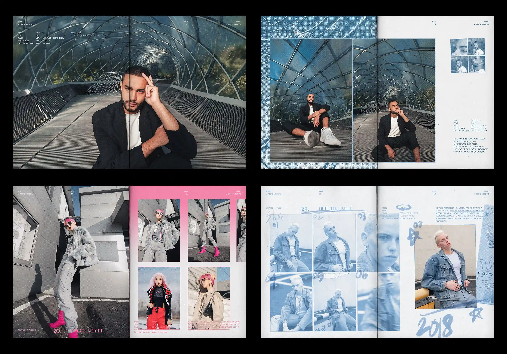
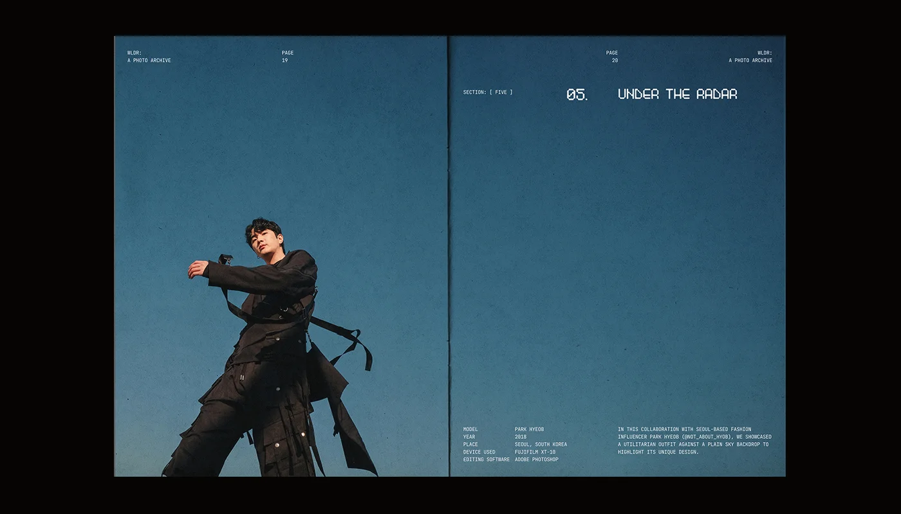
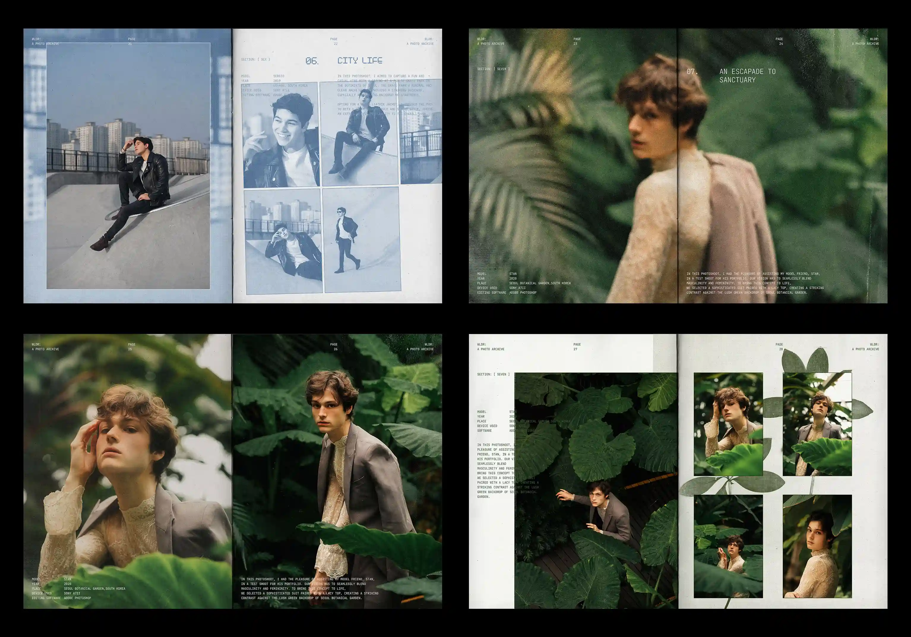
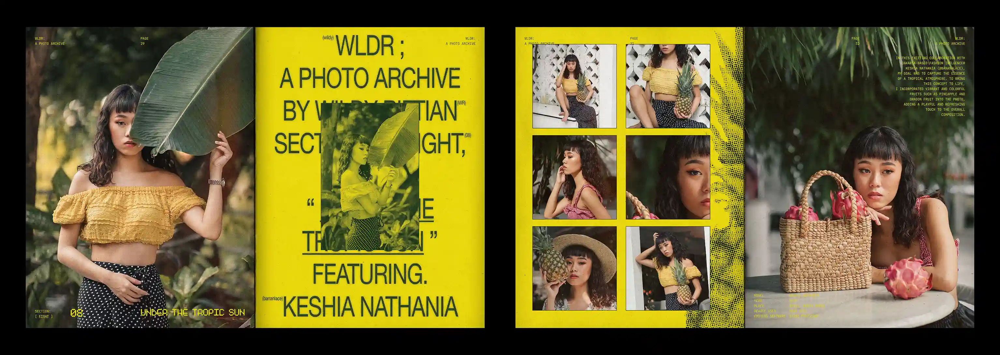
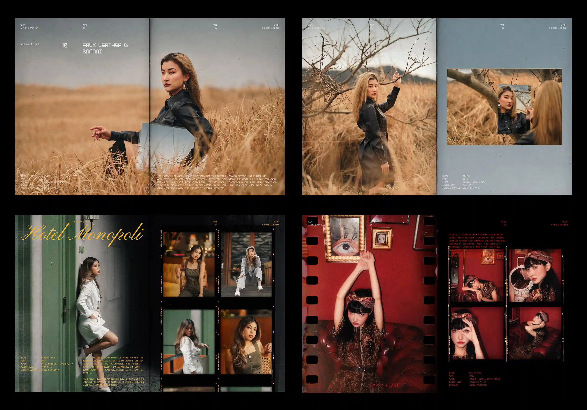
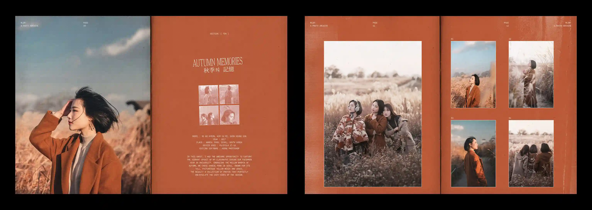
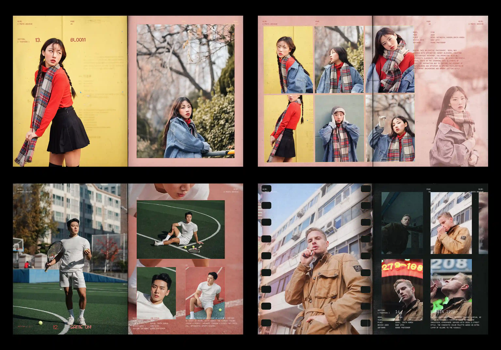
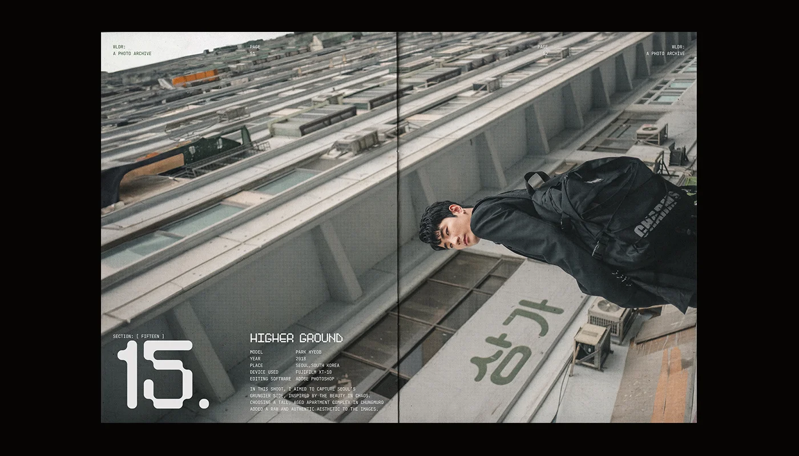
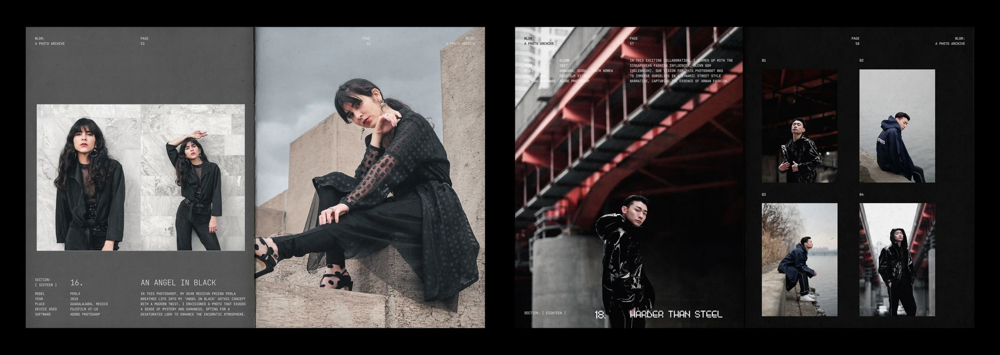
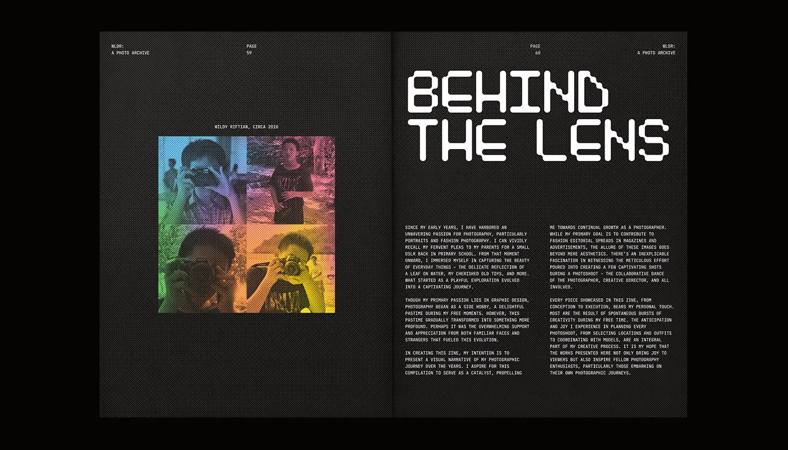
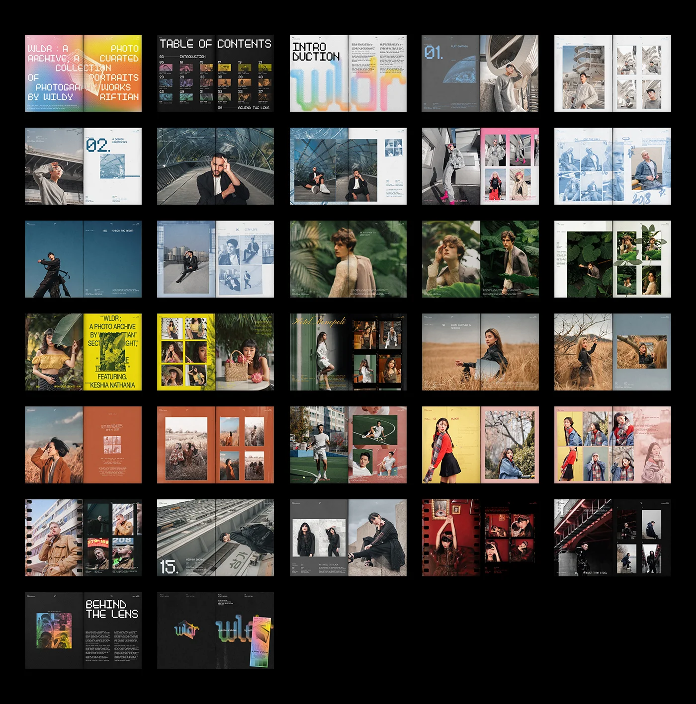